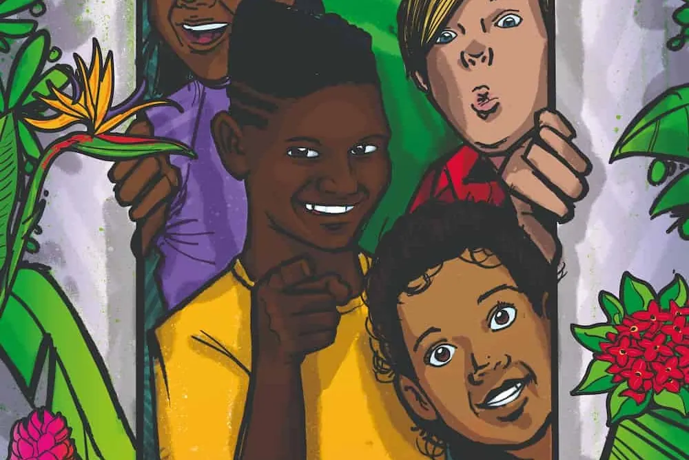
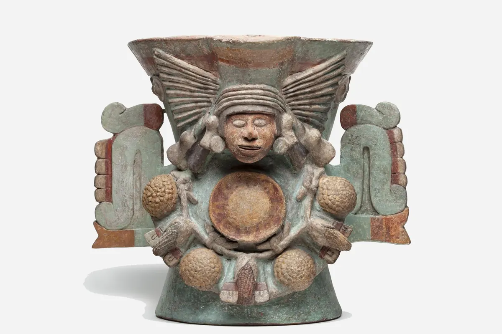
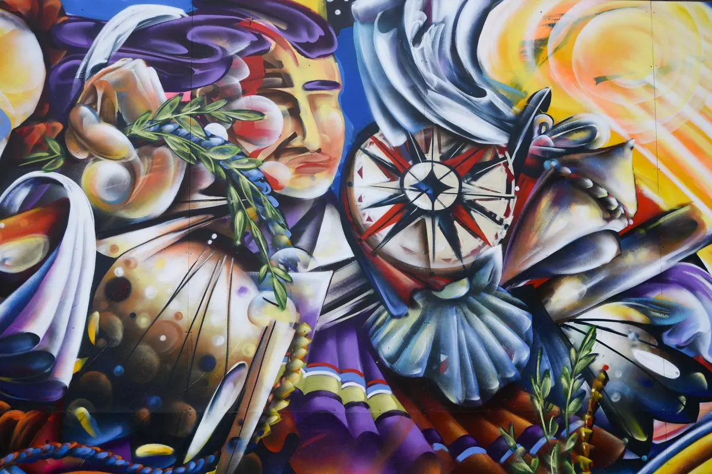
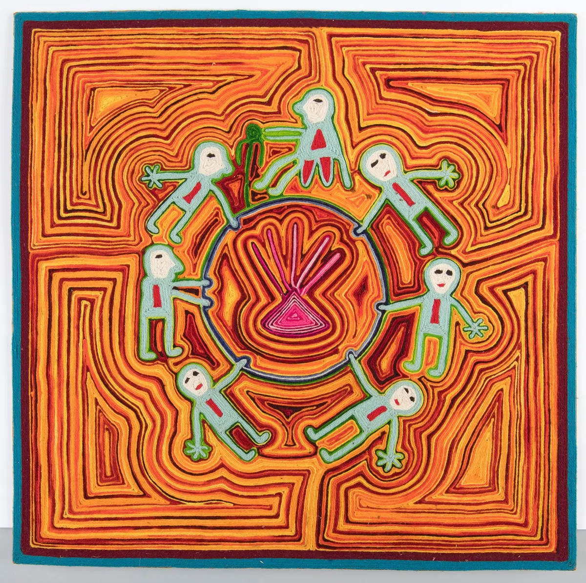
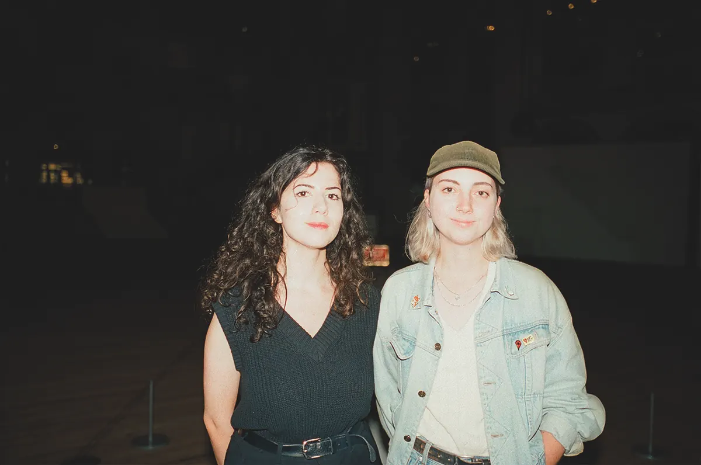
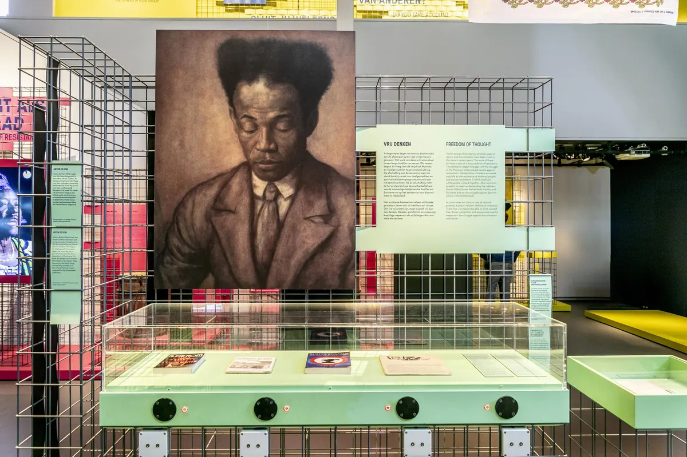
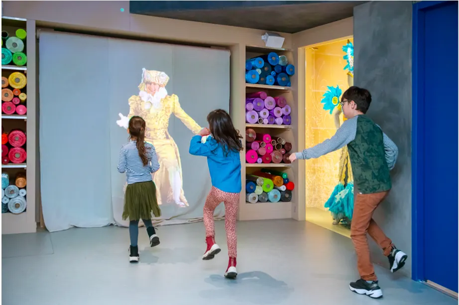

Nieuws ·
Musea van wereldculturen openen de deuren!

Dit bericht uit ons archief verscheen op 26 januari 2022 op NieuwsNijmegen.nl. Data, tijden en prijzen kunnen inmiddels anders zijn.
25 januari 2022
Museum Volkenkunde in Leiden, het Tropenmuseum in Amsterdam, het Afrika Museum in Berg en Dal en het Wereldmuseum in Rotterdam
Musea van wereldculturen openen de deuren!
Publiek van harte welkom vanaf woensdag 25 januari
De vier verschillende locaties van het Nationaal Museum van Wereldculturen zijn per woensdag 25 januari weer open voor bezoekers. Museum Volkenkunde in Leiden, het Tropenmuseum in Amsterdam, het Afrika Museum in Berg en Dal en het Wereldmuseum in Rotterdam zijn er meer dan klaar voor. Marieke van Bommel: “We zijn opgelucht dat we weer mensen mogen ontvangen en inspireren met onze exposities. We geven ze graag een echte ‘booster’ voor de geest met onze talrijke exposities voor jong en oud. Zoals Healing Power, Heden van het Slavernijverleden, Kruispunt Rotterdam en de internationale expositie AZTEKEN. Die laatste is verlengd tot en met 27 maart.”
Van Bommel sluit af: “Een bezoek kan veilig, dat hebben we de afgelopen jaren meer dan eens bewezen. De gebouwen van onze musea zijn ruim. Hierdoor kunnen veel vaste en tijdelijke exposities gewoon open.”
Check hieronder het expositie-aanbod per museum.
| Museum Volkenkunde – Leiden |
Steenstraat 1, Leiden
| EXPOSITIES |

Wierookbrander van de godin Chalchiuhtlicue, Museo de Antropología, 10-1125; Mexico, Azteeks; 1450 – 1520; Aardewerk en pigment.
AZTEKEN – de mens achter de mythe
VERLENGD t/m 27 maart 2022
Boek nu: dé internationale expositie: AZTEKEN, over één van de iconische beschavingen uit de wereldgeschiedenis.
Manshoge beelden van krijgers, mythische mens-dierfiguren, gouden sieraden en een levensgrote 3D-print van de zonnesteen. Museum Volkenkunde pakt groots uit met de expo Azteken, want het zo’n 500 jaar geleden dat de Spaanse kolonisten het Azteekse Rijk veroverden. Hiermee werden we feitelijk landgenoten van de Azteken; we dienden dezelfde Spaanse koning. AZTEKEN is een expositie vol topstukken waarvan sommige voor het eerst buiten Mexico te zien zijn. Met speciale kinderroutes en heel veel activiteiten. Ook tijdens schoolvakanties en op zondagen is er van alles te doen rondom het thema Azteken!
Ben er snel bij, de expositie staat tot en met 27 maart 2022 en reist daarna verder de wereld over.

Detail van muurschildering ‘Accommodating strength, Our land, Our hearts, Yakita Starr Fields (1981), Osage/Cherokee/Muscogee-Creek, 2019.
FIRST AMERICANS – Inheemse veerkracht en creativiteit
t/m 28 augustus 2022
In First Americans staan oorspronkelijke bewoners van Amerika centraal, de echte First Americans. Deze expositie gaat in op de ervaringen, veerkracht en creativiteit van de inheemse bevolking van Noord-Amerika. Een mix van hedendaagse kunst, fotografie, mode van inheemse kunstenaars en de historische museumcollectie, zoals kleding, tekeningen, wapens, sieraden, keramiek, fotografie.
AUSTRALISCHE KUNST – De collectie van het Aboriginal Art Museum
t/m 28 augustus 2022
In 2017 sloten de deuren van het Aboriginal Art Museum Utrecht (AAMU) definitief. De collectie van het AAMU is naar de Stichting Nationaal Museum van Wereldculturen gegaan. Een selectie van die verzameling hedendaagse Aboriginal kunst is nu in Museum Volkenkunde te zien. In de expositie zijn hedendaagse Aboriginal kunstwerken te zien.
Schatten uit depot: INDONESISCHE BRONZEN
t/m 28 augustus 2022
Unieke expositie met meer dan 200 voorwerpen die normaal in het depot verblijven. De voorwerpen bieden een schat aan informatie over de geschiedenis van Indonesië. Niet alleen over artistieke ontwikkelingen maar ook over rituele betekenissen, materiaalgebruik, handelsrelaties, economische ontwikkelingen en het koloniale verleden. De beeldjes zijn gemaakt tussen de 8e en 15e eeuw.
| Tropenmuseum – Amsterdam |
Linnaeusstraat 2, Amsterdam
| EXPOSITIES |
Expositie Cadeau Hoezo? foto: Mike Bink
CADEAU, HOEZO? – kom geven beleven
t/m 5 maart 2023
Cadeaus geven, dat doen we allemaal, overal ter wereld! Bij een verjaardagspartijtje, een bruiloft, begrafenis of als offer. Maar wat is het geheim van een goed cadeau? Cadeau, Hoezo? is een uitbundige en interactieve tentoonstelling waar je ontdekt wat een trouwjurk, poppen en mango’s met elkaar gemeen hebben. In de tentoonstelling stap je in een enorme, Instagrammable installatie van furoshiki (Japans inpakdoek) en krijg je inzichten in hoe we wereldwijd cadeaus geven en ontvangen. In hoe we geven zijn veel verschillen. Maar wist je dat er ook veel overeenkomsten zijn? Laat je inpakken door Cadeau, Hoezo?

Huichol – Woldraadschildering naar Ramón Medina Silva. Beeld: NMVW Collectie.
HEALING POWER – Winti, sjamanisme en hekserij
t/m 6 juli 2022
Healing Power toont de vele rituelen aan de hand van objecten uit Europa, Zuid-Amerika tot aan de Noordpoolgebieden. Zes verschillende ritueel specialisten nemen je mee in de verhalen achter de tradities. Objecten, voorwerpen en video zijn samengebracht met kunstobjecten van moderne kunstenaars als Damian Hirst, Marina Abramovic en Jorge Mañes Rubio, van amuletten, klankschalen en hypnotiserende trommels tot sjamanen, heksen en voodoopriesters. Healing Power geeft inzicht in verschillende vormen van helende kracht en toont de zoektocht van de moderne mens naar balans tussen lichaam, ziel en geest.
Weet wie je date; leer je tinderdate inhoudelijk kennen

Leer je tinderdate op een inhoudelijk kennen met ‘Weet wie je date’ in het Tropenmuseum. Foto: Tropenmuseum
Nu te boeken: ‘Weet wie je date’ – tour
Alle parken van Amsterdam inmiddels gezien en elke koffie to- go geproefd? Kom deze zomer naar het Tropenmuseum voor een speciale ‘Weet wie je date’ – tour. Leer je tinderdate op een unieke manier kennen, zie je partner eens buiten die vier muren van het huis of vraag je crush mee op een cultureel uitje. Bepakt met een ‘weet wie je date’ boekje vol met vragen doorkruis je het museum om elkaar en onze collectie beter te leren kennen. Vertelt jouw outfit vandaag iets over je (culturele) identiteit? Wie was vroeger jouw ultieme held? Genoeg om over na te praten met een drankje in Café De Tropen.

beeld: Kapooow
FAMILIETENTOONSTELLING – SABI SURINAME
(semi-permanente opstelling)
Kom naar Sabi Suriname en kom veel te weten over de Surinaamse band met Nederland, en hoe Suriname met de wereld is verbonden. Reis op een boot door Kusi Kondre en speel het ‘Wat is waar?-spel’ over wat je onderweg tegenkomt. Maak kennis met de Surinaamse keuken en doe boodschappen in een Surinaamse toko voor een heerlijk Surinaams gerecht. Hoe je in Sabi Suriname komt? Daarvoor moet je diep de grond in, om een geheime wereld te betreden…
| Afrika Museum – Berg en Dal |
Postweg 6, Berg en Dal
| EXPOSITIES |

Heden van het slavernijverleden – Afrika Museum fotografie: studio38c
HEDEN VAN HET SLAVERNIJVERLEDEN
t/m 3 juli 2022
Deze expositie, die in 2017 opende in Tropenmuseum, is doorgereisd naar het Afrika Museum. Heden van het slavernijverleden is geactualiseerd en onder meer aangevuld met sporen van Gelders koloniaal verleden. In deze expositie maak je kennis met actuele erfenissen van slavernij en kolonialisme in Nederland. In 1863 maakte de Nederlandse regering wettelijk een einde aan de Trans-Atlantische slavernij, maar honderden jaren van koloniale overheersing lieten sporen in onze maatschappij na die nog steeds voelbaar zijn. Heden van het slavernijverleden: een tentoonstelling met discussieplatform die de verhalen van tot slaaf gemaakte en hun nazaten centraal stelt.
INSPIREREND AFRIKA
(vaste opstelling)
Met maar liefst 54 landen, 2000 officieel erkende talen en talloze culturele gebruiken bestaat er niet zoiets als één Afrika. Afrika is het één na grootste continent ter wereld, vol diversiteit, bloeiende modescenes en dichterbij dan je denkt. Europa en Afrika zijn al eeuwen met elkaar verbonden en dat is terug te zien in ons alledaags leven.
| Wereldmuseum – Rotterdam |
Willemskade 25, Rotterdam
| EXPOSITIES |
In de muziekvideoclip Pynk draagt de Amerikaanse zangeres en actrice Janelle Monáe een ontwerp van de Nederlander Duran Lantink. Te zien in het Wereldmuseum.
WHAT A GENDERFUL WORLD
t/m 6 februari 2022
Maak kennis met genderstereotypen, zelfexpressie en empowerment wereldwijd. Op Fiji dragen politieagenten een rok. Roze is pas sinds de jaren vijftig in het Westen een meisjeskleur. En hij en zij bestaan niet in de Turkse taal. Maak je eigen fotoshoot met ‘typische mannelijke of vrouwelijke’ poses en ervaar het zelf. What a Genderful World dompelt je onder in het diverse spectrum van gender.
Sapeur Arle Nkondani Mantsende foto: ©Tariq Zaidi
KRUISPUNT ROTTERDAM
(semipermanente opstelling)
In de semipermanente opstelling Kruispunt Rotterdam plaatst het museum zijn collectie in een hedendaagse context. Aangevuld met nieuwe werken van artiesten, kunstenaars en Rotterdammers die zich lieten inspireren door de collectie van het museum. Als een soort dialoog tussen toen en nu, ver weg en dichtbij. Kruispunt Rotterdam maakt inzichtelijk dat Rotterdam de wereld altijd dichterbij bracht, te beginnen met de (handels)reizen, en vandaag de dag de wereld in zich herbergt met ruim 170 nationaliteiten.

Beeld: Wereldmuseum
FAMILIETENTOONSTELLING – SUPERSTRAAT
(vaste expositie)
In het Rotterdamse Wereldmuseum is het burendag in de doe-tentoonstelling Superstraat, dat betekent dat iedereen vanaf 6 jaar welkom is. Alle buren doen mee en hebben iets speciaals voorbereid. Ga eens langs bij Kevin, hij is kunstenaar en werkt met letters.. Of help Winston met het klaarzetten van de ingrediënten voor de feestgerechten. Buurtceremoniemeester Freddy heeft goed nagedacht over veilige maatregelen en voor jou een Buurtparcours uitgezet. Kom jij lekker binnenkijken?
| Online Activiteiten |
Overdag geen tijd maar je ’s avonds laten inspireren? Online zijn de musea 24/7 open en is er van alles te zien en te doen. Of bereid je alvast voor op je bezoek!
Podcasts
Luister naar Studio Afrika, met onder meer Floortje Dessing, Willie Wartaal en Abdelkader Benali. Luister naar de podcast Maankracht bij het enorme kunstwerk Project of the Moon in Tropenmuseum. Volg de online videoreeks en podcast What a Genderful World, een samenwerking van het Wereldmuseum en Operator Radio.
YouTube-kanaal
Kom meer te weten over het culinaire erfgoed van Azteken op het YouTube-kanaal van Museum Volkenkunde, of bekijk het lezingen-overzicht. Koken? Kijk op de website van het Tropenmuseum voor heerlijke wereldse recepten.
Voor de kinderen: doe-het-zelf activiteiten
Vanuit huis geïnspireerd worden om leuke dingen te doen? Of alvast voorpret voor een bezoek aan het museum? Voor de kinderen zijn er wereldse doe-het-zelf-activiteiten voor thuis.
Andere online activiteiten
Download verschillende kleurplaten op de websites van de musea.